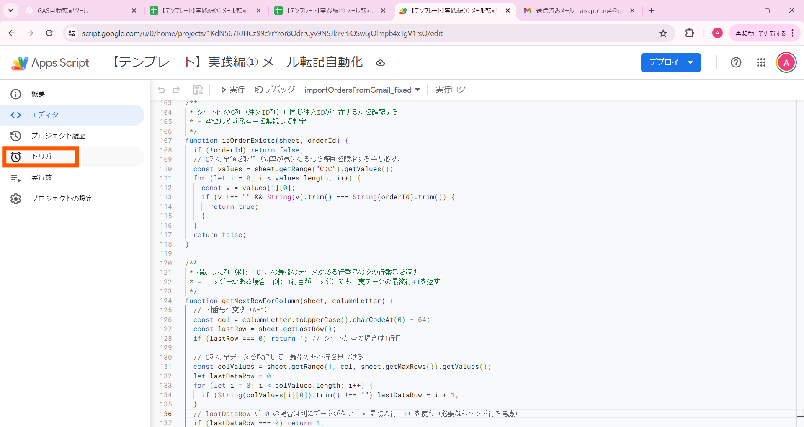
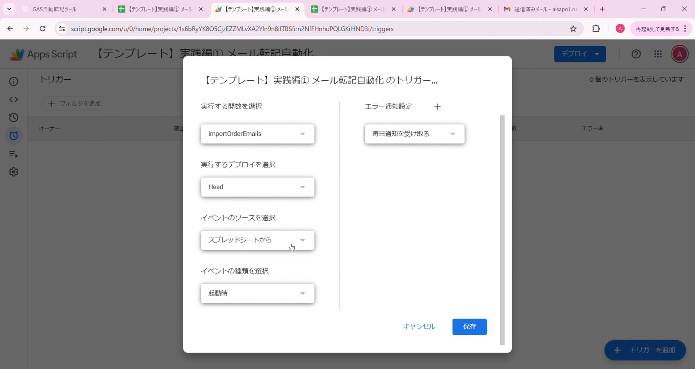
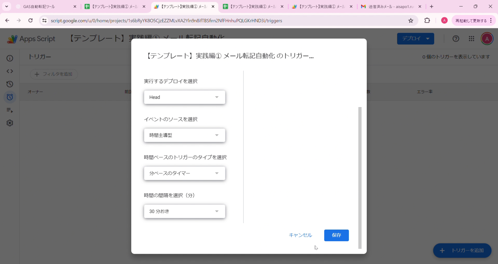

トリガー設定で自動実行
ツールが正しく動作することを確認したら、最後にトリガー設定を行いましょう
⏰ トリガーとは？
トリガーとは、指定した時間にGASを自動実行する機能です。 トリガーを設定することで、毎日決まった時間に自動的にメール転記が実行されるようになります。
例えば、毎朝9時にトリガーを設定すれば、 あなたが何もしなくても、毎朝9時に自動でGmailからメールを取得してスプレッドシートに転記してくれます。
トリガーの例
🌅
毎日午前9時に実行
朝の始業前に自動実行
📅
毎週月曜日に実行
週次レポート作成に便利
📆
毎月1日に実行
月次集計の自動化
🎉 一度設定すれば、完全放置でOK！
トリガーを設定すれば、パソコンの電源が入っていなくても、 スプレッドシートを閉じていても、GASは自動で動き続けます。 完全に手作業から解放されます。
📹 トリガー設定のデモ動画
実際のトリガー設定の流れを動画で確認しましょう。 以下の動画では、トリガー画面を開いてから設定を完了するまでの一連の手順を紹介しています。
💡 動画で全体の流れを確認したら、次の詳細手順で各ステップを確認しながら設定を進めましょう。
トリガー設定の手順
1️⃣ GASエディタでトリガー画面を開く
スクリプトエディタの左サイドバーにある「⏰ トリガー」アイコンをクリックします。
トリガー画面が開いたら、右下の「+ トリガーを追加」ボタンをクリックしましょう。

📸 クリックで拡大表示
2️⃣ トリガー設定画面で項目を入力
「トリガーを追加」画面が開きます。以下の項目を設定しましょう。
| 項目 | 設定内容 | 説明 |
|---|---|---|
| 実行する関数を選択 | importOrderEmails |
実行したい関数名を選択 |
| イベントのソースを選択 | 時間主導型 | 時間で自動実行する場合は「時間主導型」 |
| 時間ベースのトリガーのタイプを選択 | 時間ベースのタイマー | 定期的に実行する場合は「時間ベースのタイマー」 |
| 時間の間隔を選択 | 30分おき | 30分ごとに自動実行されます |
💡 時間間隔について
「30分おき」を選択すると、30分ごとに自動実行されます。 これにより、注文メールが届いたら比較的すぐにスプレッドシートに転記されるようになります。
例えば、10時に設定した場合、10時00分、10時30分、11時00分、11時30分...と 30分間隔で継続的に実行されます。

📸 クリックで拡大表示
3️⃣ 保存をクリック
設定が完了したら、「保存」ボタンをクリックします。
🎉 トリガー設定完了！
トリガー一覧に、設定したトリガーが表示されます。 これで、毎日午前9時〜10時の間に、自動的にメール転記が実行されるようになりました。

📸 クリックで拡大表示
実践①を自動実行する設定例
実践①（メール転記ツール）を30分ごとに自動実行する場合の推奨設定をまとめました。
-
●
イベントのソース：
時間主導型
-
●
タイプ：
時間ベースのタイマー
-
●
時間の間隔：
30分おき
これで、30分ごとに注文メールを自動転記できます！
⚠️ やりすぎ注意！実行時間制限
トリガーを設定する際は、実行頻度に注意しましょう。 GASには実行時間の制限があり、制限を超えるとエラーが発生します。
✅ 30分おきは問題なし
30分おきのトリガー設定は、GASの実行時間制限内で十分動作します。
計算例：
- 30分おき = 1日48回実行
- 1回の実行時間を約30秒と仮定すると、1日あたり約24分
- 無料枠の1日90分の制限内に収まります
❌ 5分・10分おきは要注意
ただし、5分おき・10分おきなど、あまりに短い間隔は 実行回数が多すぎて制限に引っかかる可能性があります。
例：
- 5分おき = 1日288回実行
- 無料枠は1日90分の実行時間制限
- → 制限オーバーでエラーになる可能性あり！
✅ 推奨設定
- ✓ 30分おき（1日48回、リアルタイム性と制限のバランス◎）
- ✓ 1時間おき（1日24回、より安全）
- ✓ 日付ベースのタイマー（毎日1回、制限の心配なし）
❌ 避けるべき設定
- ✗ 5分おき、10分おきなどの極端に短い間隔
- ✗ 複数のトリガーを同時に大量に設定
GASの実行時間制限
| アカウントタイプ | 1回の実行時間上限 | 1日の実行時間上限 |
|---|---|---|
| 無料（Googleアカウント） | 約6分 | 90分 |
| 有料（Google Workspace） | 約6分 | 6時間 |
💡 ポイント
無料アカウントの場合、1日90分の制限があります。 例えば、1回の実行が1分かかる場合、1日最大90回まで実行できます。 この制限を超えないように、実行頻度を調整しましょう。